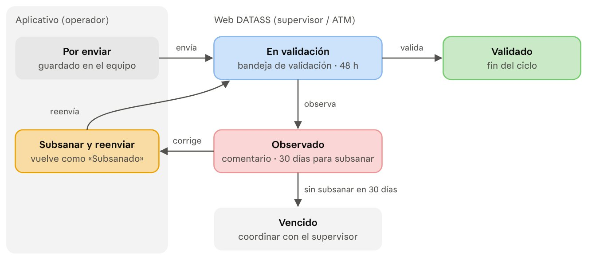

Actualizado: 25/11/2026 15:26
Rediseño UX/UI de la App Móvil DATASS — Documentación técnica
Nov 20, 2026 · @Ruben
Resumen ejecutivo
El aplicativo pasa de organizarse por módulo a organizarse por sistema: el usuario abre «Mis sistemas», elige un sistema y recién ahí decide qué actividad registrar. La hipótesis planteada se valida, con tres matices que están resueltos en la demo (sección 3).
Alcance: demo HTML navegable de un solo archivo, con los 5 módulos completos (Monitoreo del servicio de agua, Cloración, Limpieza y desinfección, O&M de agua potable y O&M de alcantarillado) y los 13 perfiles del original.
Lógica preservada: calculadoras de cloración, inventarios O&M, GPS a UTM, fotografías, validaciones y sincronización offline no se modificaron; el cambio es de arquitectura de información e interfaz.
Navegación: 4 pestañas — Mis sistemas · Registros · Sincronizar · Perfil. Los perfiles de consulta ven Mis sistemas · Resumen · Registros · Perfil.
Interfaz: evolución de la marca actual (cabecera clara, rojo institucional solo como acento), alto contraste, tema Auto/Claro/Oscuro y fuentes del sistema, sin recursos externos.
Impacto esperado: menos pasos para llegar a una actividad, menos riesgo de registrar en el sistema equivocado y estado de conexión y de envío siempre visible.
Diagnóstico de la versión original
La versión original (1.764 líneas) funciona, pero obliga al usuario a pensar primero en el módulo y después en el sistema, y repite esa elección en cada módulo.
| Hallazgo | Efecto en campo |
|---|---|
| El inicio listaba módulos; el sistema se eligía dentro de cada uno (pantallas clo-sis, mnt-sis, selector de sistema en Monitoreo) | Selección repetida de lo mismo; mayor número de toques para una actividad |
| No había un lugar que mostrara «qué me falta hacer hoy en este sistema» | El operador debía recordar qué módulos ya había cubierto |
| El sistema activo no era visible durante el registro | Riesgo de registrar en un sistema equivocado |
| Estado de conexión y de envío disperso (píldora en Sincronizar, avisos en el inicio) | Incertidumbre sobre si el dato ya salió del equipo |
| Cabecera roja de gran tamaño y bloque «hero» en cada pantalla | Menos espacio útil en pantallas pequeñas; rojo competiendo con alertas |
| Botones de acción al final del contenido, sin barra fija | Desplazamiento largo para guardar en formularios extensos |
| Sin indicador uniforme de avance en Cloración y Limpieza | El usuario no sabe cuántos pasos le quedan |
| Un solo tema visual | Poco legible a pleno sol; sin modo oscuro |
Lo que no se tocó por ser correcto: las calculadoras de cloración (anexo A5–A11), los inventarios y evaluaciones O&M, la captura de coordenadas UTM, las fotografías mínimas, las validaciones y el modelo de sincronización.
Evaluación de la hipótesis «sistema primero»
La hipótesis es correcta: el trabajo de campo ocurre en un sistema concreto, así que el sistema es el objeto principal y la actividad es la acción que se aplica sobre él (patrón objeto → acción).
Por qué se valida
Cada registro pertenece a un sistema; elegirlo una sola vez evita repetirlo en cinco módulos.
El operador piensa en «voy a San Juan», no en «voy a hacer Cloración».
Permite mostrar por sistema lo pendiente, lo en curso y lo observado.
Aplica a todos los actores: asignados (operador) o elegidos (ATM) llegan al mismo listado.
Matices y cómo se resolvieron
Borradores por actividad, no por sistema. El original guarda un borrador por módulo. Si ya existe uno en otro sistema, al iniciar la misma actividad se muestra una hoja con tres opciones: continuar ese borrador, descartarlo y empezar aquí, o cancelar.
Contexto visible dentro del flujo. Una barra «Sistema activo» de solo lectura aparece en cada pantalla de registro; el cambio de sistema solo se permite desde el hub, para no mover el contexto a mitad de un registro.
Sistemas por elegir. Quien no tiene asignaciones (p. ej. ATM) necesita primero escoger sistemas; la pantalla vacía de Mis sistemas lo guía con «Elegir sistemas».
Riesgos que se mantienen
Con muchos sistemas asignados hace falta búsqueda y filtros (incluidos: texto, tipo, «Con pendientes» y «Cerca de mí»).
Algunas actividades podrían abarcar varios sistemas a la vez; la demo asume una actividad por sistema (ver supuestos).
Arquitectura de información y navegación
La jerarquía tiene cuatro niveles: Sistema → Hub del sistema → Actividad → Confirmación. Las cuatro pestañas inferiores son transversales y siempre visibles fuera de los flujos de registro.
| Nivel | Pantalla | Qué resuelve |
|---|---|---|
| Pestaña 1 | Mis sistemas | Lista de sistemas con estado (en curso, por enviar, observado), filtros y búsqueda; bloque «Para continuar» con borradores y observados |
| Hub | Sistema (Actividades · Ficha · Historial) | Elegir la actividad sobre el sistema; ver datos del sistema y sus registros |
| Flujo | Actividad (pasos con encabezado de avance) | Registrar con el sistema fijado en la barra de contexto |
| Cierre | Confirmación | Registro guardado en el equipo; siguiente paso sugerido (Volver al sistema, Ir a Sincronizar, Ver mis registros) |
| Pestaña 2 | Registros | Historial de todo el equipo, filtrable por sistema y estado, agrupado por fecha |
| Pestaña 3 | Sincronizar | Pendientes de envío, fotografías en espera, enviados recientes |
| Pestaña 4 | Perfil | Datos del usuario, tema, sincronización automática, modo demostración |
El contexto de sistema se deriva de la ruta y del borrador activo (ctxSid()), de modo que no hay un «estado global de sistema» que pueda quedar desactualizado. El botón Atrás siempre regresa por la pila Mis sistemas › Sistema › pantalla anterior.
Perfiles de consulta (tablero): mismas pestañas, pero Sincronizar se reemplaza por Resumen y todas las pantallas de registro quedan bloqueadas.
Mapa de pantallas y justificación
| Pantalla | Estado | Justificación |
|---|---|---|
| Mis sistemas | Nueva (reemplaza el inicio por módulos) | Es la entrada única; materializa la hipótesis sistema-primero. Incluye «Para continuar», filtros y «Cerca de mí» |
| Hub del sistema | Nueva | Punto donde se elige la actividad; tres pestañas internas evitan mezclar acciones con consulta |
| Cambiar de sistema (hoja) | Nueva | Cambio rápido entre sistemas sin volver a la lista; solo en el hub |
| Conflicto de borrador (hoja) | Nueva | Evita perder o mezclar un borrador de otra ubicación; tres salidas claras |
| Registros | Nueva (absorbe «Guardados») | Un solo historial con filtro por sistema, chips de estado y agrupación por fecha |
| Resumen (consulta) | Nueva para perfiles de tablero | Avance del mes por módulo y registros por módulo sin exponer formularios |
| Barra «Sistema activo» | Nuevo componente | Previene registrar en el sistema equivocado |
| Encabezado de pasos | Nuevo componente | Avance uniforme en todos los flujos (Cloración, Limpieza, Monitoreo) |
| Franja de conexión | Nuevo componente | Un solo lugar para sin conexión / por enviar; se oculta dentro de flujos cuando hay red |
| Monitoreo › Sistema | Modificada | Ya no pide elegir sistema; solo reservorio y mapa |
| Limpieza › Verificación previa | Modificada | Sin selector de SAP; usa el sistema del hub |
| Cloración › contexto | Modificada | Solo punto, equipo y método; el sistema ya está en la barra |
| Confirmaciones | Modificadas | Botones que llevan al hub, a Sincronizar o a Registros |
| Perfil | Modificada | Tema, sincronización automática y modo demostración separado del resto de opciones |
| Elegir sistemas (ATM) | Conservada, reubicada | Se accede desde el estado vacío de Mis sistemas |
| Selectores de sistema por módulo (clo-sis, mnt-sis) | Eliminadas | Redundantes con el hub |
| Descargar sistemas (acción) | Vigente, con confirmación | La ficha de operador determina qué sistemas tiene asignados; el operador decide cuáles descargar y cada descarga se confirma con su tamaño. Se mantiene «Consultar nuevas asignaciones» |
| Ficha del sistema | Nueva (dos pestañas) | Mapa: pines por estado, distancia y todo el inventario por categorías de componentes. Datos: código, tipo, centro poblado, distrito y departamento. El reservorio es un componente más del inventario |
| Mapa del sistema | Nuevo componente | Un solo estilo en todas las pantallas; el icono de pantalla completa abre el mapa grande (con nota de uso sin conexión) y reemplaza al botón «Ver mapa ampliado»; en la Ficha agranda en su lugar |
| Hojas de diálogo | Modificadas | Cabecera y pie fijos con scroll interno; botón destructivo en rojo y Cancelar en gris |
| Formularios | Modificados | Etiqueta dentro de la caja, unidad dentro del campo, listas de opciones en una sola tarjeta y controles segmentados |
Flujos por módulo
Todos los módulos arrancan desde el hub del sistema (tarjeta de actividad → Registrar) y terminan en una confirmación con el siguiente paso.
| Módulo | Flujo en la demo |
|---|---|
| Monitoreo del servicio de agua | Sistema (reservorio y mapa) → puntos de monitoreo → viviendas → confirmación |
| Cloración | Contexto (punto, equipo, método) → caudal → cálculos → confirmación. Los resultados coinciden con el anexo (p. ej. 1.296 g en el caso de prueba) |
| Limpieza y desinfección | Verificación previa (población informada, EPP, insumos) con coordenadas UTM → componentes → unidades → insumos y fotografías (mín. 4) → guardar unidad |
| O&M agua potable | Historial de visitas → Nueva visita → verificar inventario → componentes → registrar condiciones (estado, entorno, mejoras, fotografías) → revisar visita |
| O&M alcantarillado | Mismo flujo que O&M agua, con catálogo por tipología; se llega desde el salto «Alcantarillado» del hub |
Cambios transversales en los flujos
Encabezado de pasos con segmentos de progreso (p. ej. «Unidad 1 de 1 · Limpieza y desinfección»).
Barra de acción fija al pie (Guardar unidad, Continuar registrando, Confirmar inventario).
Mensajes de éxito breves tras cada componente («Captación: componente completado»).
Borrador automático por actividad; reanudación desde «Para continuar» en Mis sistemas.
Subsanación: un registro observado aparece en Mis sistemas y en Registros con plazo propuesto de 30 días desde la observación (valor propuesto, por validar).
Descartar un borrador o una visita en curso: deslizar la fila en «Para continuar» (con el dedo o el cursor) y confirmar en una hoja con botón rojo. Cada pendiente es una tarjeta propia.
El hub del sistema se muestra sin la barra inferior de pestañas, para no mezclar navegación general con el trabajo dentro del sistema.
Monitoreo: cada reservorio es una tarjeta con código y nombre («RES-01 · Reservorio …») y, debajo, ubigeo y centro poblado; con varios reservorios se elige tocando una tarjeta.
La lista se titula siempre «Mis sistemas · N»; las tarjetas de sistema no llevan íconos pequeños (la nube aparece solo si falta descargar).
Perfil: los botones de cierre de sesión y restablecimiento van al final del contenido, sin fijarse sobre él.
Datos de prueba: SAP San Juan con 3 reservorios y SAP La Unión con 2, para probar la selección.
Mapa de Monitoreo: muestra un pin por reservorio del sistema, con el elegido resaltado; las coordenadas del recuadro son las del reservorio seleccionado y cambian al elegir otro (tocando la tarjeta o el pin). Las coordenadas por reservorio son de ejemplo y deben reemplazarse por las del catálogo.
Selectores segmentados de hasta tres opciones (p. ej. Tema): columnas de igual ancho y etiqueta centrada, sin marca de verificación; la opción activa se distingue por el color.
Perfiles y permisos
Se mantienen los 13 perfiles del original; el cambio es qué ven en Mis sistemas y qué acciones tienen en el hub.
| Tipo de perfil | Mis sistemas | Hub | Pestañas |
|---|---|---|---|
| Registrador con ficha de operador (p. ej. Operador A) | Sistemas de su ficha, ya disponibles sin conexión | Actividades con botón Registrar | Mis sistemas · Registros · Sincronizar · Perfil |
| Registrador que elige sistemas (p. ej. Responsable del ATM) | Estado vacío con «Elegir sistemas»; luego búsqueda por ámbito, centro poblado y prestador | Igual | Igual |
| Consulta / tablero (p. ej. Jefe inmediato del ATM) | Todos los sistemas del ámbito, solo lectura | Actividades con botón Consultar | Mis sistemas · Resumen · Registros · Perfil |
Las rutas permitidas para consulta son inicio, sistema, tablero, registros y perfil (VIEW_OK); cualquier otra ruta se redirige al hub. La etiqueta de cada tarjeta cambia de Registrar a Consultar para que el permiso sea evidente antes de tocar.
Sistema de diseño
La dirección visual adopta un estilo institucional del Estado peruano (referencial, por validar contra el Manual de Identidad Gráfica del MVCS, RM 134-2025-VIVIENDA): cabecera clara con franja roja superior, azul como color de acción y rojo institucional como acento.
| Elemento | Decisión |
|---|---|
| Color de acción | --primary #00478F (claro) y #2A74D6 (oscuro); valores referenciales, por validar |
| Acento de marca | --brand #CC1F1A (claro) y #E5483C (oscuro): marca, franja superior, alertas y acciones destructivas; valores referenciales, por validar |
| Temas | Auto, Claro y Oscuro, con tokens propios para cada uno |
| Tipografía | Pila de fuentes del sistema; sin fuentes externas para que funcione sin conexión. Pendiente: tipografía oficial del manual (si se adopta, incrustarla en el aplicativo) |
| Tamaño base | 16 px en cuerpo; mínimo 14 px en textos auxiliares (excepción frente a los 16 px de Gob.pe, a validar) |
| Controles | Botones y campos de 52 px de alto (uso con guantes o a pleno sol) |
| Acción principal | Barra fija al pie en formularios (.pad > .btns) |
| Componentes nuevos | Barra de app clara, franja de conexión, barra de contexto, encabezado de pasos, tarjeta de sistema, tarjeta de actividad, pestañas del hub, hojas inferiores |
| Barra de pestañas | Píldora flotante centrada, solo íconos (Phosphor) con indicador deslizante, nombre en tooltip al pasar el cursor o pulsar prolongado, insignia de pendientes en Sincronizar |
| Cabecera institucional | Franja «PERÚ» (rojo) + «Vivienda · DATASS» (gris) en Mis sistemas, y borde rojo de 3 px sobre la barra de app |
| Movimiento | Transiciones horizontales según dirección, microinteracciones en botones y tarjetas; respeta prefers-reduced-motion |
| Escalas normalizadas | Tokens de texto (14–32 px), íconos (16–48 px), alturas (44/52 px) y radios; verificado de 320 px a tableta |
Se conservaron los nombres de clase del original para facilitar el traspaso al desarrollo.
Usabilidad y accesibilidad
| Heurística (Nielsen) | Cómo se aplicó |
|---|---|
| Visibilidad del estado | Franja de conexión, insignias de pendientes, «Sistema activo», avance por pasos y por unidades |
| Correspondencia con el mundo real | El sistema es lo primero, como en la visita de campo; «Cerca de mí» para llegar al sistema donde se está |
| Control y libertad | Guardar y salir, borradores, Atrás coherente, opción de cancelar en la hoja de conflicto |
| Consistencia | Mismas tarjetas, mismos pasos y misma barra de acción en los 5 módulos |
| Prevención de errores | Contexto de solo lectura en flujos; conflicto de borrador; botones destructivos en rojo y separados |
| Reconocer antes que recordar | «Para continuar» y el estado de hoy por actividad en cada tarjeta de sistema |
| Diseño minimalista | Se eliminó el bloque «hero» y la cabecera roja de gran tamaño |
Accesibilidad y uso en campo
Objetivos táctiles de 52 px; separación suficiente entre acciones.
Alto contraste en tema claro y oscuro; el estado nunca depende solo del color (siempre hay ícono y texto: Pendiente, Sincronizado, Observado).
Texto base de 16 px; el aplicativo real debe respetar el tamaño de fuente del sistema operativo.
Etiquetas visibles en la barra de pestañas y en todos los campos.
Offline y sincronización
El modelo del original se conserva: todo se guarda en el equipo y se envía cuando hay conexión. Lo que cambia es la visibilidad.
Un solo lugar para el estado de red: la franja bajo la cabecera muestra «Sin conexión» y los registros por enviar; dentro de un flujo se oculta si hay red, para no apilarse con la barra de contexto.
Pestaña Sincronizar: pendientes de envío, aviso de fotografías en espera (con tamaño referencial) y enviados recientes con su código DAT.
Mensajes de garantía: tras guardar, «la información está guardada en este dispositivo»; un reintento no duplica registros.
Sistemas disponibles sin conexión: los de la ficha de operador ya están en el equipo; «Consultar nuevas asignaciones» requiere conexión.
Modo demostración (Perfil): permite simular conexión, falla de envío y restablecer datos para presentar los casos sin red real.
Descarga y eliminación de sistemas en el equipo
Principio: nada se descarga ni se quita sin que el usuario lo sepa y lo confirme. Las reglas son las mismas en todas las pantallas (Inicio, Perfil, Almacenamiento y Sistemas que supervisas).
| Situación | Operador | Supervisión |
|---|---|---|
| Origen de la lista | Sistemas asignados en su ficha (web DATASS). Se ven siempre en Mis sistemas, descargados o no; el equipo guarda solo sus datos básicos. | Elige en «Sistemas que supervisas» (filtro por distrito; secciones Elegidos / Disponibles). Elegir solo arma la lista: no descarga. Los elegidos se ven siempre en Mis sistemas, descargados o no. |
| Descargar | Enlace «Descargar» en la tarjeta o «Descargar todos». Hoja de confirmación con datos del sistema, mapa del distrito si falta (opcional) y total en MB. | Al tocar «Guardar · N sistemas» la app pregunta «¿Descargar ahora los nuevos? · X MB» (Descargar ahora / Más tarde). Después, igual que el operador: «Descargar» en la tarjeta o «Descargar todos», con confirmación. |
| Sistema nuevo | Etiqueta «Nuevo» (3 días) y aviso «Te asignaron…». No se descarga solo. | No aplica. |
| Progreso y fallo | «Descargando · NN %». Si se corta la conexión: «Descarga incompleta» con reintentar; se reanuda al volver la conexión porque ya fue aceptada. | Igual. |
| Perfil | Secciones En tu equipo y Asignados sin descargar, con descarga individual y «Descargar todos». | En tu equipo y Elegidos sin descargar. |
| Quitar del equipo | Desde Almacenamiento, con confirmación (Quitar del equipo / Mantener). Sigue asignado y vuelve a «Sin descargar». | Igual: sigue en «Sistemas que supervisas» como «Sin descargar». Para sacarlo de la lista se desmarca allí; si estaba descargado, pide confirmar que también se quita del equipo. |
| Bloqueos al quitar | Con conexión solamente. Nunca con actividad en curso, registros por enviar u observado por corregir (candado con el motivo y acceso para resolverlo). | Igual; en la selección esos sistemas se marcan «se mantiene». |
| Sugerencia de 30 días | «Puedes liberar X MB» con «Revisar»: solo resalta los sistemas sin actividad; nunca quita nada por su cuenta. | Igual. |
Interacción con el módulo web DATASS
La App Móvil DATASS registra en campo; la supervisión, la validación y la administración ocurren en la web DATASS. En la app el operador solo ve el resultado de esas acciones (estados, observaciones, nuevas asignaciones). Esta sección mapea cada punto de contacto entre ambos.
| Función | En el aplicativo (operador) | En la web DATASS | Quién actúa en la web | Plazo |
|---|---|---|---|---|
| Validación de registros | Envía el registro; ve el estado «En validación» | El registro entra a la bandeja de validación; se valida u observa con un comentario | Supervisor (ATM) | 48 h para validar |
| Subsanación | Corrige el registro observado y lo reenvía | Vuelve a la bandeja con estado «Subsanado» | Supervisor (ATM) | 30 días para subsanar |
| Plazo de subsanación vencido | Ve el estado «Vencido»; ya no puede reenviar | El supervisor decide cómo proceder | Supervisor (ATM) | — |
| Anulación de un registro enviado | Solicita la anulación con un motivo (duplicado, sistema equivocado, datos erróneos, otro) | Se aprueba o rechaza; mientras tanto el registro sigue vigente | ATM | Sin plazo definido |
| Ficha de operador y sistemas asignados | «Consultar nuevas asignaciones» trae los sistemas agregados | Se registra la ficha del operador y sus sistemas (hasta 3, en distintos centros poblados) | ATM | — |
| Corrección del catálogo (sistemas, componentes) | No se corrige en la app; se indica que se solicite en la web | Se corrige el dato del catálogo | ATM / PNSR | — |
| Titular nuevo registrado en campo | Lo registra como titular nuevo | Genera una alerta para revisión | ATM | — |
| Piletas de un registro ya enviado | No se eliminan desde la app | El supervisor las observa o anula | Supervisor (ATM) | — |
| Perfiles de supervisión (ATM, PNSR, RVCS) | Solo consultan el tablero | Supervisan, validan y gestionan usuarios | ATM, PNSR, RVCS | — |
| Parámetros del proceso | Lee los plazos al sincronizar | Se configuran los días de subsanación y las horas de validación | Administrador | — |
Ubicación imprecisa (GPS en rojo). Si la precisión del GPS es peor que el límite rojo (±50 m por defecto) y no mejora en 15 segundos, el operador puede guardar el punto indicando un motivo (sin cobertura, árboles o techos cerca, quebrada o cerro cercano, u otro con descripción). El registro llega con la línea «Ubicación imprecisa (revisar en web)», que indica el punto, la precisión y el motivo. En la bandeja de validación de la web conviene resaltar estos registros para que el supervisor (ATM) decida si los valida o los observa.
Ciclo de validación

ciclo de validación de un registro · app y web DATASS
El operador solo actúa en la columna del aplicativo; validar, observar y cerrar por vencimiento ocurren en la web.
Estados que ve el operador en la app
Por enviar: guardado en el equipo, aún no llega a DATASS.
En validación (web): recibido; espera revisión del supervisor (48 h).
Validado: aprobado en la web.
Observado · por subsanar: el supervisor dejó un comentario; aparece en «Por corregir» del inicio con los días restantes.
Subsanado: reenviado tras corregir; vuelve a validación.
Vencido: pasó el plazo de 30 días sin subsanar.
Anulación solicitada / Anulado: el ATM revisa la solicitud; si la aprueba, el registro queda anulado.
Lo que simula la demo
La demo no se conecta a la web: los registros observados y validados vienen precargados, la anulación se aprueba sola a los pocos segundos y «Consultar nuevas asignaciones» agrega un sistema de prueba (SAP El Mirador). Los plazos de 30 días y 48 h están fijos en el código como si vinieran de parámetros.
Por definir con el equipo del módulo web
Cómo se avisa al operador de una observación nueva (al sincronizar o con notificación push).
Qué ve el operador cuando el ATM rechaza una anulación y con qué motivo.
Si la subsanación de un registro vencido se puede reabrir desde la web.
Qué perfil configura los parámetros del proceso y si pueden variar por región.
Cómo envía la API la marca de ubicación imprecisa: hoy llega como una línea de texto del registro («Ubicación imprecisa (revisar en web)»). Para filtrar y resaltar estos registros en la bandeja de validación, la API debería enviarla como un campo propio por punto, con la precisión en metros, el motivo elegido y el nombre del punto.
Si la institución exige precisión del GPS (en rojo, esperar 15 s y pedir el motivo) o solo marca el punto como ubicación imprecisa. En la demo la exigencia está apagada por defecto y se activa en Perfil → Modo demostración («Exigir precisión del GPS»); apagada, el punto en rojo se guarda al instante y queda marcado sin motivo.
Supuestos, limitaciones y siguientes pasos
Supuestos y limitaciones de la demo
Un borrador por actividad (no por sistema); si hay otro en un sistema distinto se pregunta qué hacer.
«Cerca de mí» usa ubicación simulada; la versión real debe usar el GPS del equipo.
Plazo de subsanación de 30 días: valor propuesto, por confirmar con el negocio.
Las fotografías son marcadores de posición; no se usa la cámara.
Los datos son de demostración y se guardan en el navegador (clave propia del rediseño); no hay servidor.
Se verificó con pruebas automatizadas en Monitoreo, Cloración y los flujos principales de Limpieza y O&M sin errores de consola. Los casos largos de Limpieza (todas las unidades) y de subsanación completa se recorrieron solo parcialmente.
Siguientes pasos sugeridos
Validar la demo con 3 a 5 operadores y ATM en campo (tareas: registrar una cloración, retomar un borrador, enviar con red intermitente).
Decidir si algunas actividades deben admitir varios sistemas o un borrador por sistema.
Confirmar el plazo de subsanación y la regla de «Observado».
Probar con tamaños de fuente ampliados y en exteriores.
Trasladar tokens y componentes al aplicativo real conservando los nombres de clase.